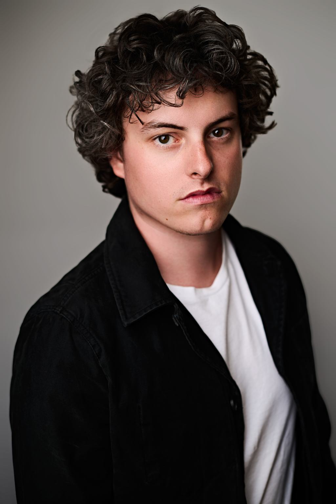
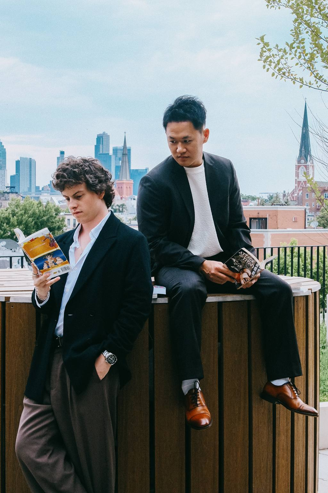

Bio
Frankie Seratch is an actor and producer based in New York, splitting time between Los Angeles and Tokyo.
He most recently starred in Henry Chaisson’s (Antlers, Servant) horror feature RECLUSE, which had its world premiere at Tribeca 2026, and in the financial thriller HUMAN RESOURCE opposite Veanne Cox. He appeared in Dunkin’s 2025 Super Bowl campaign with Druski, directed by Ben Affleck, and in Béla Baptiste’s dystopian feature THE OBELISK opposite Dolly Lewis.
Seratch made his Off-Broadway debut in 2012 and went on to work with Bartlett Sher, Wayne Cilento, and Walter Bobbie. He is best known for his leading role in John Kander’s THE LANDING opposite David Hyde Pierce, and appears alongside Mike Faist in THE GRIEF OF OTHERS, which premiered to critical acclaim at SXSW and Cannes.
As a producer, he is executive producer on NIGHT AFTER NIGHT, premiering at FrightFest 2026 from the team behind I Trapped the Devil, and is developing Todd Bogin’s second feature HEAVY ASHES, packaging in the UK with Des Hamilton. He is a co-founder of IP Bay in Tokyo, developing Japanese IP from anime to live action directly with authors and publishers including Shueisha and Kodansha.

He trained in the conservatory at Point Park University and studies with Lesly Kahn in Los Angeles and Jon Shear, Ted Sluberski, and Guy Stroman in New York. AEA. SAG-AFTRA.